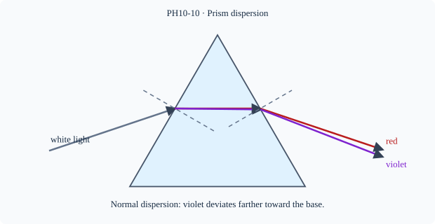

Prerequisite bridge
PH10-02
Before starting, identify the reference frame, directed rays, units and applicable geometric assumptions. Unbound prerequisites remain provisional.
Connected textbook foundation (preserved from PR #5)
11. Refraction by prisms and dispersion
A prism has non-parallel refracting faces. An incident ray changes direction at its entry and exit, producing an overall deviation related to prism angle, angle of incidence and refractive index. A prism is not the same as a parallel slab; its emergent ray is generally not parallel to the incident ray.
In a dispersive material such as ordinary crown glass under visible light, refractive index varies with wavelength. White light may therefore separate into colours. Violet light is generally deviated more than red in standard visible-glass demonstrations; do not assume identical behaviour for every material and wavelength without evidence.
Compare three diagrams: a parallel slab, an ordinary prism, and two prisms arranged oppositely. What remains invariant, and what changes? A pupil who memorizes “glass bends toward the normal” at one surface cannot safely infer the overall path without both boundaries.
Build and check the model
A prism has nonparallel refracting faces. For ordinary glass in air, transmitted rays generally deviate toward the base; at each interface use its own normal. In a two-dimensional prism, internal angles satisfy r₁+r₂=A and total deviation δ=i+e−A for standard transmitted geometry. Wavelength-dependent n causes dispersion; normal dispersion means violet generally bends more than red, but material/wavelength regime matters.
Worked anchor
A prism of A=60° operated symmetrically has r₁=r₂=30°. If i=e=45°, δ=30° and relative n=sin45/sin30=√2. This is the symmetric minimum-deviation condition in ordinary ideal geometry.
Condition and limiting check
A wedge with sufficiently steep internal incidence may exhibit total internal reflection rather than transmission. Quantitative prism formulas beyond school scope remain candidate extensions.
Misconception repair
Dispersion is not scattering; a prism separates wavelengths through different refractive indices.
Reasoning diagram

Self-check before transfer
Symmetric prism path A=40°, i=e=30°. Find total deviation.
Check the reasoning
δ=i+e−A=20°; internal angles each 20°.
Source and figure status
Curriculum pointer CBSE10; candidate scope only. Preserved chapter manuscript. Original subtopic-specific figure attached. Scientific figure and teaching-sufficiency reviews remain HOLD.